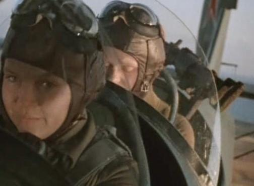

Memoria Histórica - La web de emijrp
Para que su rostro y su nombre no se borren de la historia.
| Tabla de contenidos |
|---|
|
1. 46º Regimiento "Taman" 2. Turismo Rojo 3. Víctimas del franquismo 3.1 Las Trece Rosas |
46º Regimiento "Taman"
El 46º Regimiento "Taman" fue una unidad de aviación soviética formada íntegramente por mujeres. Su trabajo consistía en llevar a cabo bombardeos de hostigamiento y precisión sobre los convoyes, fortificaciones, maquinaria y unidades del ejército nazi.
Estas aviadoras soviéticas realizaron más de 23.000 vuelos y descargaron 3.000 toneladas de bombas sobre los fascistas. Lucharon con igual valor y habilidad que sus homólogos masculinos y tras la guerra veintitrés de estas mujeres obtuvieron el título de Héroe de la Unión Soviética y treinta de ellas murieron durante las misiones. Los nazis, hostigados por sus bombardeos, las apodaron "Las brujas de la noche".
Más información:
- Cruz, Alberto (2013). Las brujas de la noche. El 46 Regimiento Taman de aviadoras soviéticas en la II Guerra Mundial. Ver presentación (2)(3). Audio de otra presentación.
- Kabanov, Mikhail (2013). Golondrinas de la noche.
- Zhigulenko, Yevgeniya (1981). Las brujas de la noche en el cielo.
- Memorias de lucha: Las brujas de la noche.
Turismo Rojo
Véase también: Turismo Rojo
Víctimas del franquismo
Véase también: Documentales#Memoria Histórica
Las Trece Rosas
Los nombres de las 13 mujeres (más una): Carmen Barrero Aguado, Martina Barroso García, Blanca Brisac Vázquez, Pilar Bueno Ibáñez, Julia Conesa Conesa, Avelina García Casillas, Elena Gil Olaya, Virtudes González García, Ana López Gallego, Joaquina López Laffite, Dionisia Manzanero Salas, Victoria Muñoz García, Luisa Rodríguez de la Fuente, Antonia Torre Yela (Cementerio virtual en Find A Grave).
 |
Esta página fue modificada por última vez el 2016-09-27 22:11:22 (UTC) | GitHub pages |